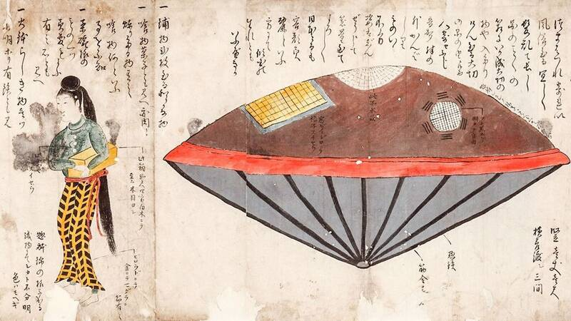

Utsuro-bune
Hitachi Province (now Ibaraki), Japan, 1803

A legend that in 1803 a round vessel, likened to an incense burner, washed up on the coast carrying a young woman who spoke no known language and clutched a box she wouldn't let go of. The locals are said to have pushed her back out to sea. It survives in four texts written between 1815 and 1844, and is often cited as an early UFO story, though scholars have explored more ordinary origins such as a shipwrecked foreign sailor or a folk tale. The pin is approximate. 1,2
Open in the interactive Watcher
Sources
- Utsuro-bune Wikipedia
- “Utsurobune”: A UFO Legend from Nineteenth-Century Japan Nippon.com